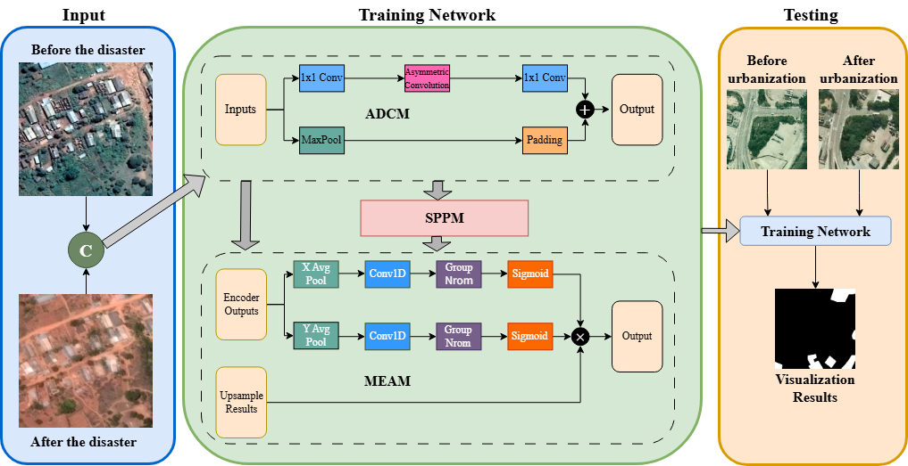
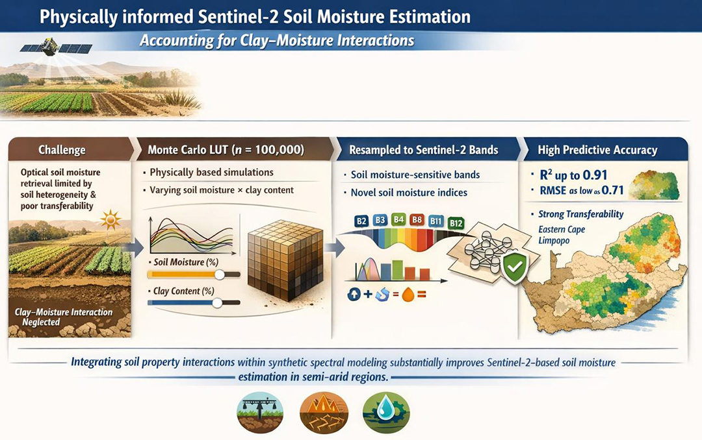
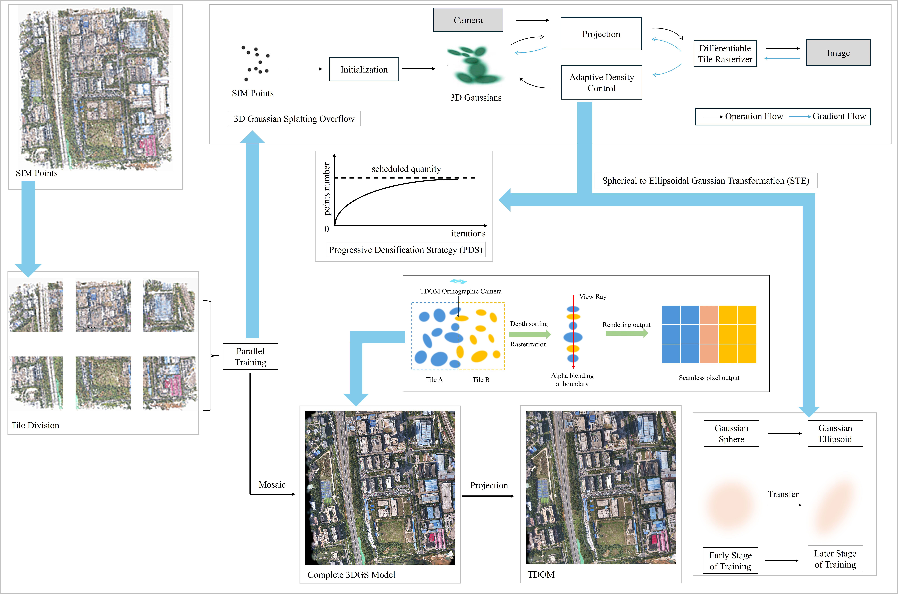
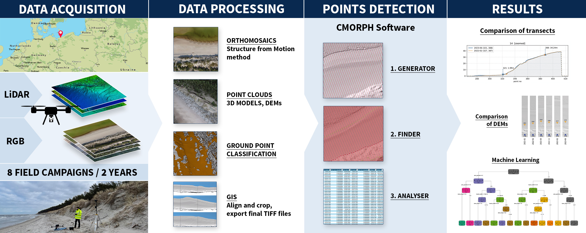
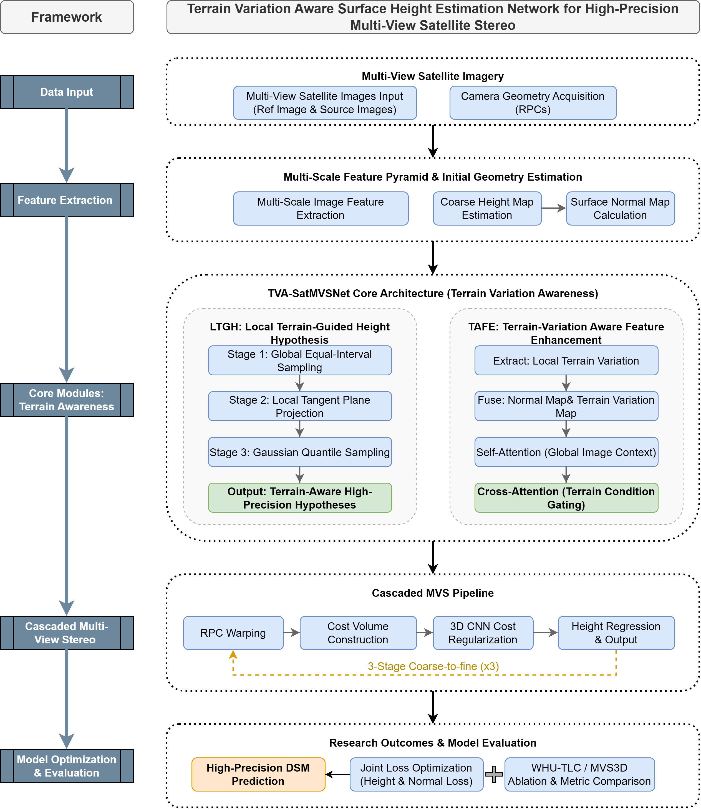
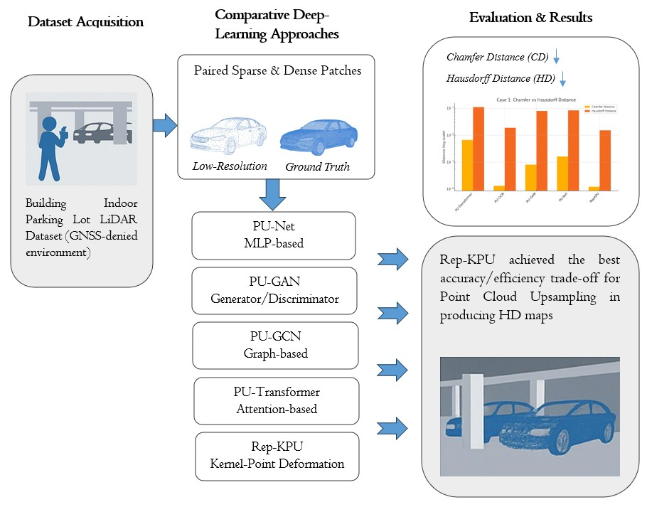

Pages: pp. 767–780
Authors: Cui, Yichen; Shen, Hong; Lam, Chan-Tong;
Abstract:
Read more...
Remote sensing change detection is essential for land use planning, urban monitoring, and disaster response. However, conventional deep learning methods often suffer from blurred building and vegetation edges, shadow misclassification, and low efficiency due to excessive complexity. To address these issues, we propose ELFFNet, a lightweight and efficient network that achieves high detection accuracy with reduced computational cost. ELFFNet integrates Asymmetric Dilated Convolution Modules for deep semantic extraction, Multi Efficient Attention Modules between encoder and decoder to retain fine spatial details, and a simplified Pyramid Pooling Module at the deepest stage for low-cost global context aggregation. Experiments on the GVLM-CD and WHU-CD data sets show superior performance, with Kappa coefficients of 82.86% and 94.48%, F1 scores of 91.72% and 95.24%, and mean intersection over union values of 84.96% and 94.73%. Importantly, ELFFNet requires a parameter size of 7.31 MB and 22.6 giga floating-point operations [GFLOPs])—far fewer than Transformer-based models—while delivering strong edge detection for small targets and complex disaster areas. This balance of accuracy and efficiency makes ELFFNet highly suitable for practical remote sensing applications.

Pages: pp. 781–790
Authors: Atyosi, Yonwaba; Cho, Moses Azong; Majozi, Nobuhle Patience; Bonnet, Wessel; Ramoelo, Abel;
Abstract:
Read more...
Accurate and spatially transferable estimation of soil moisture is critical for sustainable agriculture, water resource management, and drought monitoring, particularly in data-scarce semiarid regions. However, soil moisture retrieval from optical satellite data remains challenging due to heterogeneous soil conditions and limited model generalizability, especially when interactions between soil moisture and clay content are neglected. This study presents a physically informed, simulation-based multivariate framework for estimating soil moisture from freely available Sentinel-2 multispectral imagery that explicitly accounts for soil clay content and its interaction with moisture. A Monte Carlo look-up table comprising 100,000 synthetic soil reflectance spectra was generated under varying soil moisture and clay conditions and resampled to Sentinel-2 spectral bands. Soil moisture-sensitive spectral band combinations, ratios, and newly developed soil moisture indices were derived and used to train machine learning models, which were evaluated using group-aware cross-validation to assess spatial robustness and transferability. Model application across multiple agricultural sites in South Africa’s Eastern Cape and Limpopo provinces, regions geographically distinct from calibration areas and spanning contrasting ecological and climatic conditions demonstrated high predictive performance (R² up to 0.91; RMSE as low as 0.71) and strong spatial transferability. The results indicate that explicitly integrating soil property interactions within a synthetic spectral modeling framework substantially improves Sentinel-2–based soil moisture estimation. The proposed approach advances operational optical remote sensing of soil moisture by bridging physically consistent spectral simulations and scalable multispectral observations, providing a transferable methodology for precision irrigation, drought early warning, and sustainable agricultural water management in semiarid environments.

Editor’s Choice
Pages: pp. 791–801
Authors: Yang, Chao; Li, Yapeng; Liu, Feiyang; Yao, Shihong; Zheng, Maoteng; Xiao, Zhiyan; Li, Guancheng; Zhang, Qichen; Ma, Kui;
Abstract:
Read more...
True digital orthophoto maps (TDOMs) serve as foundational geospatial products for applications in land surveying, urban planning, and emergency management. Conventional TDOM generation relies on differential correction, often resulting in cartographic artifacts such as geometric discontinuities, radiometric inconsistencies, and linear feature misalignments. Although recent methods leverage 3D Gaussian splatting to bypass differential correction, their computational demands hinder real-world deployment. To address these limitations, we propose FastPro-Gaussian, a novel framework enabling rapid high-quality TDOM generation on consumer-grade GPUs. Our contributions are threefold: block-based processing ensuring scalability for large-scale scenes; progressive densification stabilizing model optimization and reducing training iterations; and spherical-to-ellipsoidal Gaussian transformation, accelerating early-stage optimization of structural features (e.g., building edges). Experiments demonstrate that FastPro-Gaussian surpasses commercial solutions (ContextCapture, Metashape, and Pix4Dmapper) in rendering quality for building facades, edges, and roads. Compared to state-of-the-art methods, it achieves comparable TDOM fidelity with over two-fold acceleration in training time (notably more than two times faster than Tortho-GS). These gains in efficiency and efficacy confirm its strong potential for practical deployment in geospatial production pipelines.

Research Articles Open Access
Pages: pp. 803–815
Authors: Śledziowski, Jakub;
Abstract:
Read more...
Unmanned aerial vehicles (UAVs) are increasingly used for high-resolution coastal monitoring. This study compares two widely used approaches for deriving digital elevation models (DEMs) from eight repeat UAV surveys (coacquired lidar + red–green–blue [RGB] in the same flight): (1) UAV lidar and (2) structure-from-motion photogrammetry (SfM) based on RGB imagery. A total of 16 DEMs (8 field campaigns in both 2022 and 2023) acquired with a DJI Matrice 300 real-time kinematic drone equipped with a Zenmuse L1 sensor over a 1-km dune–beach system in Mrzeżyno, southern Baltic coast (Poland). Using an automated transect-based workflow (895 cross-shore profiles), shoreline position, beach and dune widths, elevations, slopes, and volumetric change were extracted and related to tide-gauge–based hydrometeorological conditions using deep neural networks and complementary driver-consistency analyses. Both approaches captured consistent temporal trends and converged on the same dominant environmental drivers, with storm activity (event count and duration) together with wave and sea-level conditions explaining most of the observed variability. Differences were largest over water surfaces and locally within vegetation-affected dune areas, where lidar produced fewer artifacts. Despite these local deviations, the net beach + dune volume change between the first and last survey differed by only 0.48% between lidar and SfM, indicating that SfM can provide comparable coastal-change information for many monitoring tasks when survey geometry and quality control are carefully managed.

Pages: pp. 817–831
Authors: Guo, Wei; Chen, Min; Fang, Tong; Zhao, Junqi; Zhang, Jinbo; Zhang, Zhanhao; Liu, Kai; Hu, Han; Ge, Xuming; Zhu, Qing; Xu, Bo;
Abstract:
Read more...
Deep learning–based multi-view stereo (MVS) has shown great potential for large-scale 3D reconstruction from satellite imagery. However, existing methods struggle with the large depth ranges and complex scenes inherent to this domain. By relying on rigid range-guided sampling and local consistency assumptions, these approaches often neglect specific terrain variations. This leads to misallocated hypothesis budgets and excessive smoothing across discontinuities in complex terrain. To address these limitations, we propose a terrain variation–aware multi-view satellite imagery surface height estimation network that introduces surface normal information to construct an end-to-end terrain-guided height estimation framework. To effectively capture terrain variation, the network computes normal maps from height maps and measures local terrain variation within the neighborhood of reference pixels based on height and normal information. The network further incorporates a local terrain-guided height hypothesis module and a terrain variation–aware feature enhancement module that optimize height hypothesis sampling precision and enhance the terrain-aware features in regions with significant terrain variation, respectively. Additionally, we propose a joint height-normal loss to implicitly optimize height estimation. Extensive experiments conducted on the WHU-TLC and MVS3D data sets demonstrate that our method achieves state-of-the-art performance across all evaluation metrics. Notably, in urban areas and mixed scenes, the proposed approach achieves a significant improvement in the proportion of high-precision pixels compared to existing methods, with the maximum improvement reaching 30.25%.

Pages: pp. 833–847
Authors: Fatholahi, Sarah Narges; Yin, Shunde; Hu, Kristie; He, Hongjie; Yao, Kevin Yikai; Zhang, Dedong; Lu, Dening; Li, Jonathan;
Abstract:
Read more...
Upsampling of point clouds is a critical process in three-dimensional data processing, aimed at enhancing the resolution, uniformity, and overall quality of sparse and irregular point cloud data. This task becomes especially necessary in underground parking lots, where factors such as occlusions, reflective surfaces, and limited sensor coverage often result in incomplete or uneven point distributions. Accurate upsampling in these environments can significantly improve downstream tasks such as semantic segmentation, object detection, and spatial mapping by providing denser and more geometrically consistent reconstructions. In this paper, a comprehensive evaluation of four state-of-the-art deep-learning algorithms for point cloud upsampling is presented. Leveraging a novel, high-quality data set captured in a real-world indoor parking lot environment, the performance of these models is systematically assessed under conditions characterized by structural complexity and varying point densities. This comparative study evaluates each model’s ability to address sparsity and non-uniformity while preserving geometric fidelity and achieving uniform distribution in challenging indoor scenarios.
